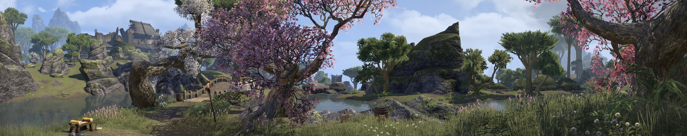

Aktivitäten in Eso
Die Welt von ESO ist voller Abenteuer, die darauf warten erlebt zu werden, das ist kein Geheimnis. Jedoch kann es gerade für Neulinge in Eso oft frustrierend sein, da man regelrecht überschüttet wird mit der gigantischen und offenen Welt. Um euch nun unter die Arme zu greifen, werden hier Aktivitäten jeder Art aufgelistet. Hierbei wird allerdings ein klarer Strich zwischen PvE und PvP gezogen. Bei PvE (=Player versus Environment) ist die Rede von Tätigkeiten, die meist mit anderen Spielern im Team oder auch alleine zu bewältigen sind. Es handelt sich jedoch keinen Falls darum gegen andere Spieler zu arbeiten. Das ist die Spezialisierung des PvPs (=Player versus Player). Hier steht es im Vordergrund die gegnerischen Teams oder Fraktionen niederzuzwingen.

PvE-Aktivitäten
Quests
Den Anfang muss hier natürlich ganz klar das Questsystem machen, denn in Eso wie auch jedem anderen MMO gibt es sie. Sie sind ein Hauptbestandteil des Spiels. Auf jeder der Karten gibt es Quests und es lohnt sich, sie zu erledigen. Man erhält immer wieder mal neue Gegenstände und Gold wie auch Erfahrungspunkte dürfen nach einem Questabschluss nie fehlen. Diese Quests variieren aber auch stark, während die Eine endet, nach dem man einem Jäger ein paar Fälle gebracht hat, ziehen sich manche von Ihnen quer durch eine ganze Provinz. Meist sind es aber die Quest-Linien, die ein so großes Ausmaß haben. Es sind Quests, die nicht nach Abschluss vollendet sind, die Handlung wird über mehrere Quests hinweg vorangetrieben. Die Hauptquest ist eine davon. Sie ist aber eine besondere Art davon, sie erklärt nämlich die Hauptgeschichte von ESO. Und auch die unterschiedlichen Gilden bringen jeweils eine lange Quest-Reihe mit sich. Als letztes gibt es noch die täglichen Quests. Sie werden mit einem statt schwarz mit einem blauen Quest-Marker markiert und können wie der Name schon sagt, jeden Tag erledigt werden.
Dolmen und Weltenbosse
Auf ganz Tamriel verstreut findet man sie und in einer gewissen Weise stehen sie in Verbindung mit der Haupthandlung. Es sind Steinformationen, die von Molag Bal genutzt werden für den Versuch Tamriel in sein Reich in Oblivion zu ziehen, dafür wirft er durch ein großes Portal am Himmel seine Anker ab. Sobald diese Anker aufschlagen, beginnt die Aktivität. Es sind hier lediglich wenige Gruppen von Daedra zu bekämpfen, die gefolgt werden von einem Boss der erscheint, wenn seine Untertanen erledigt wurden. Für Neueinsteiger ist dies jedoch nicht als Einzelaktivität zu betrachten. Es reicht schon eine kleinere Gruppe von Spielern um es noch mit genügend Action zu beenden. Danach gibt es eine Belohnung, die meist aus Set-Gegenständen dieses Gebietes besteht.
Die Weltenbosse stellen meist eine größere Herausforderung dar. Sie sind etwas schwerer als die Dolmen, mit dem richtigen Team oder auch mit zufälligen Spieler mit dem gleichen Ziel diesen Boss zu erledigen, klappt es aber genauso. Auch hier gibt es als Belohnung Set-Gegenstände zu erhalten.
Gewölbe und offene Verliese
Die Gewölbe sind vergleichsweise klein gehaltene Höhlen oder Ähnliches. Am Ende wartet wie immer ein Boss. Der ist jedoch relativ leicht umzuhauen. Belohnungen bestehen meist aus Set-Gegenstände.
Die größere Version von Gewölben sind die offenen Verliese. Offene Verliese wie auch Gewölbe sind außerdem auch auf Karten zu finden. Gewölbe gibt es aber mehr als offene Verliese, die sind nämlich einmalig in einem Gebiet. In den offenen Verliesen sind außerdem immer Himmelsscherben, gerade für die interessant, denen es an Fertigkeitspunkten fehlt. Gedacht sind diese für Gruppen.
Verliese und Prüfungen
Diese zwei Aktivitäten sind für Neue in Eso besonders anfällig zu übersehen. Verliese sind zu finden über die Aktivitätensuche im Menü zu finden. Sie unterscheiden sich auch stärker von den bisher genannten Aktivitäten. Sie werden nämlich, wenn man nicht verrückt genug ist, sie allein zu bestreiten, in vierer Gruppen bestehend aus einem Heiler, einem Tank und zwei Kriegern durchquert.
Prüfungen legen dann nochmal eine Nummer drauf. Bei den Spielern sind sie als „Raid“ bekannt und wie der Name schon sagt, prüfen sie die Spieler. Prüfungen werden von 12 Spielern betreten und sind enorm anspruchsvoll. Man kann ihnen jedoch nicht über einer Aktivitätensuche gesucht werden. Die Spieler, die auf Prüfungen aus sind, begeben sich nach Kargstein. Dort geben sie sich als Tank/Heiler/Schadensausteiler bekannt und warten drauf, dass sich Gruppen bilden, die vorhaben die selbe Prüfung anzutreten. Oft wird aber auch in allen möglichen Karten um Gruppen füllende Spieler zu finden. Für beide Aktivitäten, Verliese wie auch Prüfungen, steht ein normaler Schwierigkeitsgrad zur Verfügung, wie auch ein Veteran Modus und das aller Schwierigste, der Hardmode. Hierbei muss man in Verliesen eine Schriftrolle beim Endgegner aktivieren oder eine bestimmte Bedingung im Kampf erfüllen. Bei Prüfungen funktioniert es fast ausschließlich nur mit Bedingungen.
PvP-Aktivitäten
Cyrodiil
Beim Vergleichen von den PvE- und PvP-Aktivitäten, würde man meinen, dass es mehr in PvE zu tun gibt. Das kann man so nicht sagen, denn es sind weniger Möglichkeiten, dafür aber umso größer und umfangreicher. Das kann jeder Spieler bestätigen, der Cyrodiil schon selbst bereist hat. Cyrodiil ist ausgelegt für große Schlachten, daher ist empfohlen, dieses Gebiet nur in einer Gruppe zu betreten. Habt ihr aber schon eine an PvP interessierte Gruppe, so fällt dies schon um einiges leichter. Überfallt gegnerische Arbeiterlager und nehmt deren Burgen mit Belagerungswaffen ein um an Dominanz im Allianzkrieg zu gewinnen. Cyrodiil könnt ihr im Menü über die Kampagne beitreten. Dort müsst ihr noch eine Hauptkampagne festlegen um nicht einfach in eine Kampagne zu flüchten, in der es für eure Allianz besser steht.
Die Kaiser liegt im Zentrum Cyrodiils und kann ebenso über das Menü unter Kampagne gefunden werden. Auch hier ist eine Hauptkampagne festzulegen. In der Kaiserstadt sind meist kleinere Gruppen unterwegs. Dort kannst du dann in den 8 Bezirken der Kaiserstadt für deine Fraktion kämpfen oder ihr beseitigt die gegnerischen Spieler in der Kanalisation der Stadt, in welcher ihr auch auf den Antagonisten Molag Bal treffen könnt. Belagerungswaffen werden hier jedoch nicht verwendet.
Schlachtfelder
Für die Leute, die schnell in ein Gemetzel wollen sollten die Schlachtfelder die erste Wahl sein. Hier kämpfen 3 Teams aus maximal 4 Spieler bestehend um den Sieg. Es gewinnen jene, die in der vorgegebenen Zeit (15min.) den höchsten Punktestand erreicht hat. Die Punkte haben aber auch eine Obergrenze, wird diese von einem Team erreicht, so wird die Runde direkt beendet und die Sieger stehen fest. In Schlachtfeldern gibt es unterschiedliche Modi. Während du beispielsweise in Chaosball um einen Ball kämpfst, welcher dem Team Punkte gibt umso länger sie ihn vor den anderen Teams hüten kann, geht es beim Todeskampf um die rohe Anzahl von Tötungen.
Duelle
Duelle dürfen in der offenen Welt überall durchgeführt werden. Sie können aber nicht in Gewölben, Verliesen oder Prüfungen statt finden. Um jemanden herauszufordern öffnet ihr das Interaktionsmenü, das aufleuchtet, wenn ihr den Spieler anvisiert. Duelle haben kein Zeitlimit, sie werden durch den Tod eines Duellanten beendet oder durch die Flucht von einem der Beiden.